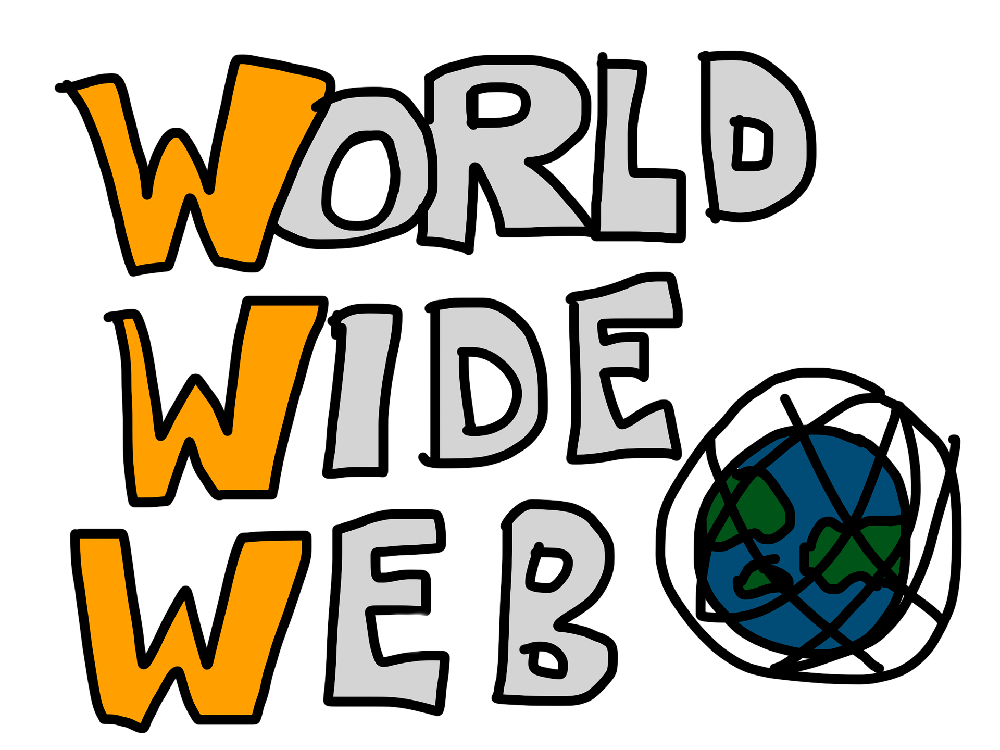

WWW
El WWW (Acrònim Anglès de World Wide Web, Xarxa d'abast mundial) o web és una xarxa de pàgines escrites en hipertext mitjançant el llenguatge de marcatge HTML i connectades entre si mitjançant vincles, de manera que formin un sol cos de coneixement pel qual es pot navegar fàcilment. Per accedir-hi és indispensable un navegador web. Va ser creada per Tim Berners-Lee quan treballava al CERN de Ginebra, Suïssa. Ell mateix dirigeix el W3C, l'organisme encarregat de mantenir-ne el funcionament.
Estàndards Web
- L'Identificador de Recurs Uniforme (URI), que és un sistema universal per a referenciar recursos a la Web.
- El Protocol de Transferència d'Hipertext (HTTP), que especifica com es comuniquen el navegador i el servidor entre ells.
- El Llenguatge de Marcat d'Hipertext (HTML), utilitzat per a definir l'estructura i contingut de documents d'hipertext.
- El Llenguatge de Marcat Extensible (XML), utilitzat per a descriure l'estructura dels documents de text.